스포츠 토너먼트 사용법
반 대항 토너먼트를 준비하고, 추첨하고, 기록하고, 순위를 발표하기까지 이 앱 하나로 진행하는 방법을 정리했어요.
01이 앱으로 할 수 있는 것
종목과 참가 반만 정하면 대진표부터 순위까지 자동으로 이어져요. 학교스포츠클럽 대회, 학생회 주관 반 대항전, 체육대회 종목 예선에 맞춰 만들었어요.
023분 만에 시작하기
처음이라면 예시 대회로 한 바퀴 둘러보고, 내 대회는 그다음에 만드세요.
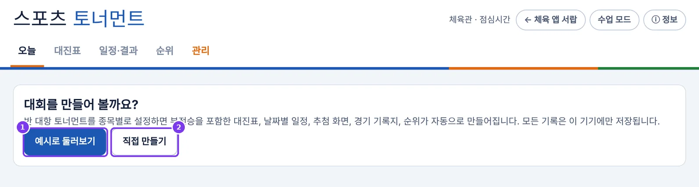
- 예시로 둘러보기 — 1학년 배드민턴(남·녀부)과 2학년 탁구가 들어 있는 예시 대회를 만들어요.
- 직접 만들기 — 빈 대회를 만들고 관리 탭으로 이동해요.
- 예시로 둘러보기대진표·일정·규칙이 미리 채워진 예시 대회가 열려요. 마음껏 눌러 봐도 괜찮아요.
- 관리 → 대진 추첨 → 추첨 화면 열기스페이스바로 추첨을 진행하고 저장하기를 누르면 대진이 확정돼요.
- 일정·결과에서 경기 하나 눌러 점수 넣기세트 점수를 넣고 저장하면 대진표와 순위에 바로 반영돼요.
- 관리 → 데이터 관리 → 새 대회 시작둘러보기가 끝나면 예시를 지우고 내 대회를 만들어요. (대회·종목 만들기)
- 백업 파일 내려받기기록은 이 기기에만 저장돼요. 중요한 날에는 꼭 백업 파일을 받아 두세요.
03화면 한눈에 보기
위쪽 탭으로 화면을 옮겨 다녀요. 관리 탭은 선생님만 쓰는 곳이고, 나머지는 학생에게 보여 주는 화면이에요.
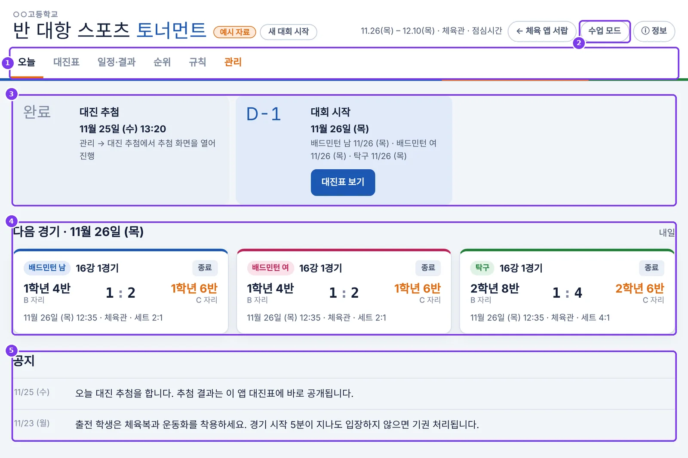
- 탭 — 오늘 · 대진표 · 일정·결과 · 순위 · 규칙 · 관리. 규칙을 비워 두면 규칙 탭은 숨겨져요.
- 수업 모드 — 학생에게 보여 줄 때 켜요. 관리 탭과 입력 기능이 잠겨요. (자세히)
- D-day 카드 — 참가 신청 마감, 대진 추첨 같은 대회 전 일정. ‘대회 시작’ 카드는 자동으로 붙어요.
- 오늘의 경기 / 다음 경기 — 오늘 날짜의 경기가 없으면 가장 가까운 다음 경기일을 보여 줘요. 카드를 누르면 기록지가 열려요.
- 공지 — 관리 탭에서 쓴 공지가 최신 순으로 보여요.
| 탭 | 보이는 내용 | 이럴 때 써요 |
|---|---|---|
| 오늘 | D-day, 오늘(다음) 경기, 공지 | 점심시간에 TV로 띄워 두기 |
| 대진표 | 종목별 대진표(세로형·가로형), 이미지 저장, 인쇄 | 대진 공개, 게시판 부착 |
| 일정·결과 | 날짜별 경기 목록, 점수, 심판, 진행 상태 | 결과 입력, 일정 확인 |
| 순위 | 종목(부)별 1~4위 | 시상, 결과 발표 |
| 규칙 | 관리 탭에 적은 경기 방법·규칙 | 경기 전 규칙 안내 |
| 관리 | 대회 정보, 종목, 추첨, 공지, 일정, 규칙, 심판, 데이터 | 준비와 운영 전부 (수업 모드에서는 숨김) |
04상황별 따라 하기
대회를 준비하는 순서대로 정리했어요. 필요한 부분만 골라 읽어도 돼요.
4-1대회와 종목 만들기
관리 탭 맨 위에서 대회 정보와 종목을 정해요. 바꾼 내용은 저장 버튼 없이 바로 저장돼요.
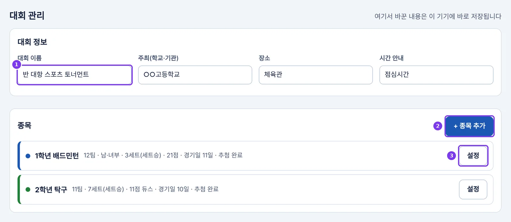
- 대회 정보 — 대회 이름, 주최(학교), 장소, 시간 안내. 화면 맨 위 제목과 기록지·인쇄물에 그대로 쓰여요.
- + 종목 추가 — 배드민턴, 탁구, 피구처럼 종목(학년)마다 하나씩 만들어요.
- 설정 — 종목의 참가 팀, 경기 방식, 일정을 정하는 칸이 펼쳐져요.
① 참가 팀 정하기
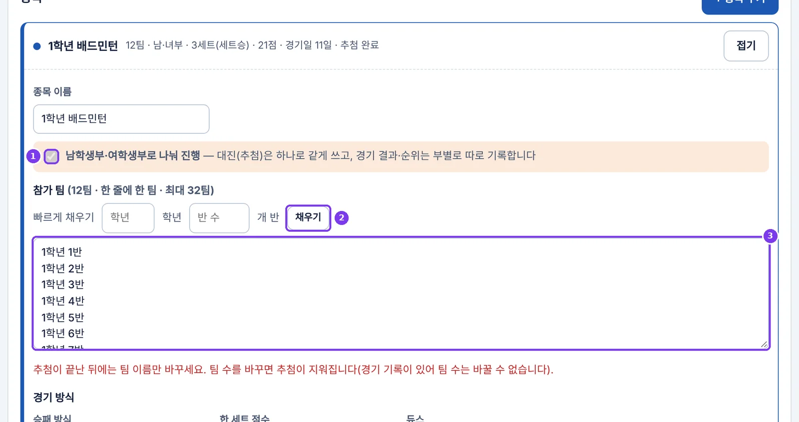
- 남학생부·여학생부로 나눠 진행 — 추첨(대진)은 하나로 같게 쓰고, 경기 결과와 순위는 부별로 따로 기록해요. 대진표·일정 탭에 ‘배드민턴 남’, ‘배드민턴 여’가 따로 생겨요.
- 빠르게 채우기 — 학년과 반 수를 넣고 채우기를 누르면 ‘1학년 1반 … 12반’이 한 번에 들어가요.
- 참가 팀 목록 — 한 줄에 한 팀, 최대 32팀. 동아리 이름이나 ‘3반 A팀’처럼 자유롭게 적어도 돼요.
부전승은 자동이에요. 12팀이면 16강 자리 중 4곳이 부전승 자리가 되고, 추첨 화면에 ‘부전승’ 표시가 붙어요. 불참하는 반은 추첨 전에 목록에서 지우세요.
추첨이 끝난 뒤에는 팀 이름만 고치세요. 팀 수를 바꾸면 추첨이 지워지고, 경기 기록이 하나라도 있으면 팀 수를 바꿀 수 없어요.
② 경기 방식 정하기
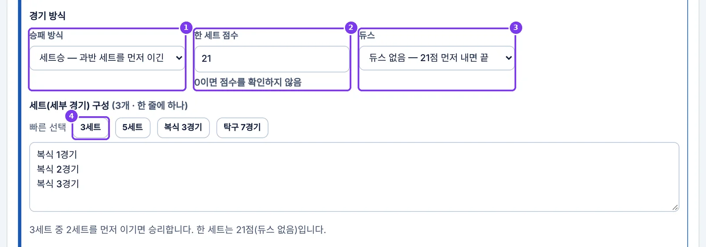
- 승패 방식 — 세트승(과반 세트를 먼저 이긴 팀 승) 또는 총득점 합산(모든 경기 득점의 합이 큰 팀 승).
- 한 세트 점수 — 21, 11, 15처럼 세트가 끝나는 점수. 0으로 두면 점수 확인을 하지 않아요(시간제 경기).
- 듀스 — ‘듀스 있음’이면 2점 차가 나야 세트가 끝나요. 기록지에서 잘못된 점수를 잡아 줄 때 이 설정을 써요.
- 세트(세부 경기) 구성 — 3세트 5세트 복식 3경기 탁구 7경기를 누르거나, ‘남단 1 / 여단 1 / 혼복’처럼 한 줄에 하나씩 직접 적어요. 이 이름이 기록지의 줄이 돼요.
| 이런 대회라면 | 승패 방식 | 세트 점수 · 듀스 | 세트 구성 |
|---|---|---|---|
| 배드민턴 반 대항(복식 3경기) | 세트승 | 21점 · 듀스 없음 | 복식 3경기 |
| 탁구 단체전(7경기 4선승) | 세트승 | 11점 · 듀스 있음 | 탁구 7경기 |
| 배구·빅발리볼(3세트 2선승) | 세트승 | 15점 · 듀스 있음 | 3세트 |
| 피구·줄다리기처럼 판 수로 겨루기 | 세트승 | 0점(확인 안 함) | 1판 / 2판 / 3판 |
| 농구·풋살(전·후반 득점 합) | 총득점 합산 | 0점(확인 안 함) | 전반 / 후반 |
③ 경기 일정 넣기 (선택)
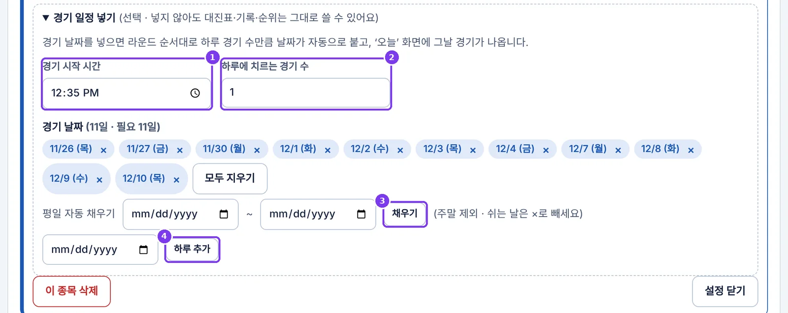
- 경기 시작 시간 — 매일 같은 시간에 한다면 한 번만 적어요(예: 점심시간 12:35).
- 하루에 치르는 경기 수 — 코트가 2면이면 2. 필요한 경기일 수가 이 숫자에 맞춰 계산돼요.
- 평일 자동 채우기 — 시작일과 끝나는 날을 고르고 채우기. 주말은 빠지고, 시험·행사로 쉬는 날은 날짜 옆 ×로 빼요.
- 하루 추가 — 날짜를 하나씩 더할 때 써요.
‘경기 날짜 (11일 · 필요 11일)’처럼 넣은 날짜 수와 필요한 날짜 수가 함께 보여요. 날짜가 모자라면 남은 경기는 날짜 없이 ‘미정’으로 남으니, 필요한 수만큼 맞춰 주세요. 일정을 아예 넣지 않아도 대진표·기록·순위는 그대로 쓸 수 있어요.
비가 오거나 행사로 경기가 밀리면, 종목 일정은 그대로 두고 그 경기의 기록지에서 날짜만 바꾸면 돼요. 일정 목록에 ‘변경’ 표시가 붙어요. (경기 결과 입력)
4-2대진 추첨 행사 진행하기
추첨은 종목마다 따로 해요. 남·녀부로 나눈 종목은 추첨 한 번으로 두 부의 대진이 함께 정해져요.
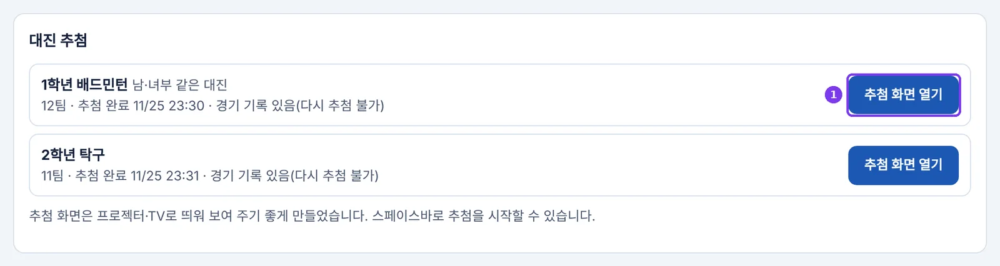
- 추첨 화면 열기 — 종목별 추첨 화면이 화면 전체에 열려요. 추첨 상태(추첨 전 · 추첨 완료 · 경기 기록 있음)가 옆에 보여요.
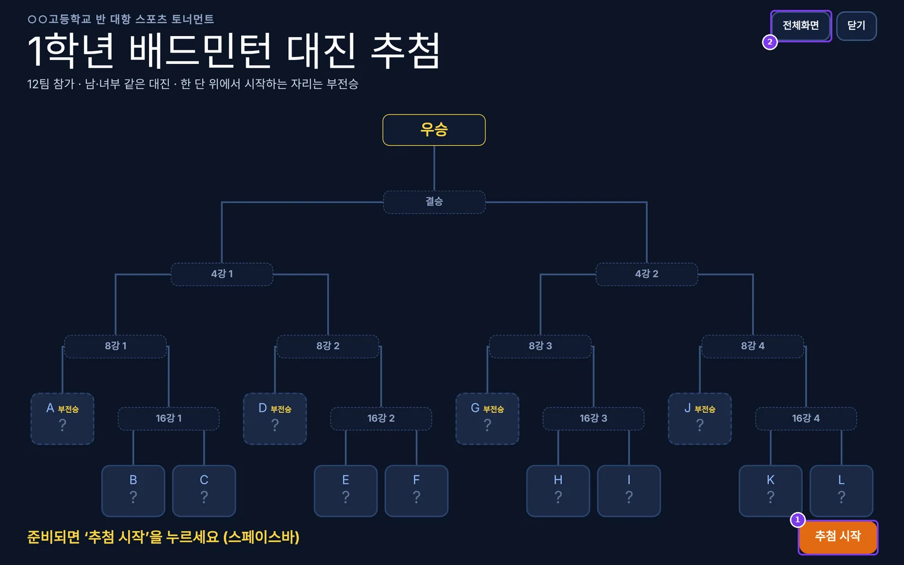
- 추첨 시작 또는 스페이스바 — 빈 자리(A, B, C …)에 반이 하나씩 떨어져요.
- 전체화면 — 주소창까지 사라져 프로젝터·TV에서 크게 보여요. 추첨이 끝나도 닫기를 누르기 전까지 전체화면이 유지돼요.
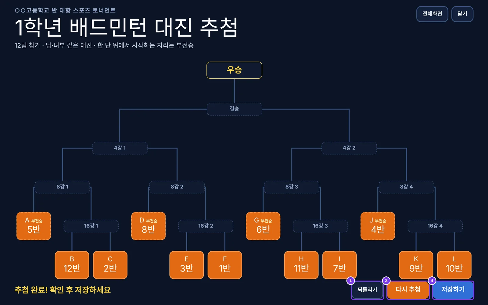
- 되돌리기 — 저장하지 않은 이번 추첨을 취소해요. 처음 추첨이었다면 빈 자리로 돌아가요.
- 다시 추첨 — 처음부터 새로 뽑아요.
- 저장하기 — 이걸 눌러야 대진이 확정돼요. 저장하면 대진표·일정에 반 이름이 들어가요.
경기 기록이 하나라도 들어간 종목은 다시 추첨할 수 없어요. 추첨을 다시 하고 싶다면 그 종목의 경기 기록을 먼저 모두 지워야 해요.
행사 진행 팁 — 각 반 대표를 앞으로 불러 스페이스바를 누르게 하면 공정해 보이고 분위기도 살아요. 추첨이 끝나면 바로 대진표 → 이미지로 저장해서 학급 단톡방에 올려 주세요.
4-3공지 · D-day · 규칙 올리기
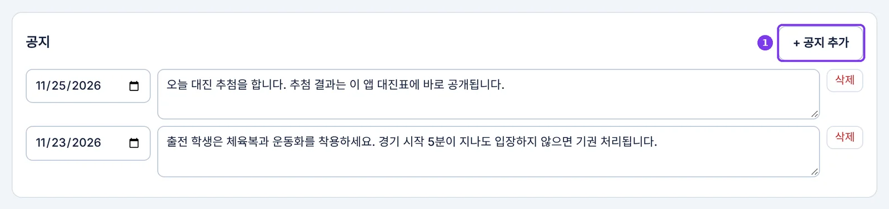
- + 공지 추가 — 날짜와 내용을 적으면 ‘오늘’ 화면 아래에 최신 순으로 보여요. 필요 없는 공지는 삭제.
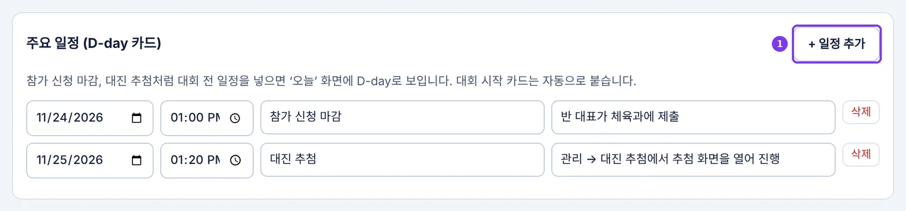
- + 일정 추가 — 날짜·시간·제목·설명을 넣으면 ‘오늘’ 화면에 D-day 카드로 떠요. 지난 일정은 ‘완료’로 바뀌어요.
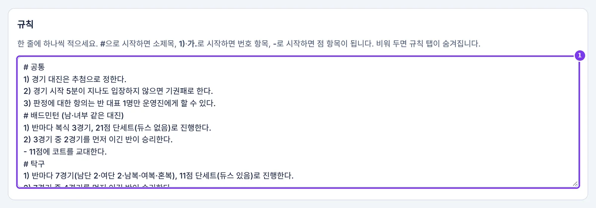
- 규칙 입력 칸 — 한 줄에 하나씩 적으면 규칙 탭에 보기 좋게 정리돼요. 비워 두면 규칙 탭이 숨겨져요.
| 이렇게 적으면 | 이렇게 보여요 |
|---|---|
# 배드민턴 | 소제목 |
1) 반마다 복식 3경기로 한다. 또는 가. … | 번호 항목 |
- 11점에 코트를 교대한다. | 점 항목 |
| 그 밖의 줄 | 보통 문장 |
한글 파일로 만든 대회 계획서의 경기 규칙을 그대로 복사해 붙여 넣고, 줄 앞에 #, 1), -만 다듬으면 빨라요.
4-4학생 심판 배정하기
학생 심판 명단을 넣으면 남은 경기에 심판을 자동으로 나눠 줘요. 학생 이름은 이 기기에만 저장되고, 수업 모드에서는 보이지 않아요.
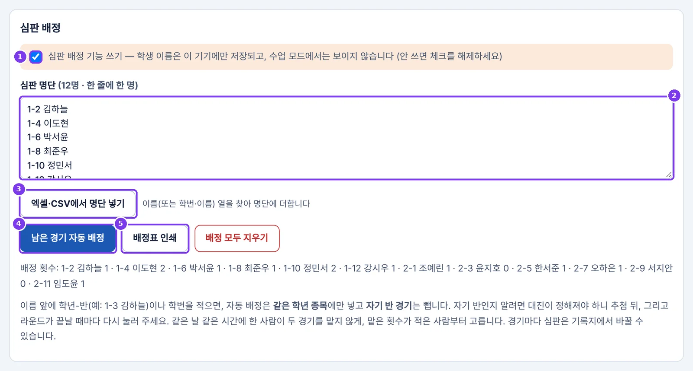
- 심판 배정 기능 쓰기 — 쓰지 않는다면 체크를 해제하세요. 일정·기록지에서 심판 칸이 사라져요.
- 심판 명단 — 한 줄에 한 명. 이름 앞에
1-3 김하늘처럼 학년-반이나10305 김하늘처럼 학번을 붙이면 자동 배정이 더 똑똑해져요. - 엑셀·CSV에서 명단 넣기 — 나이스 명렬표나 심판 신청 명단(.xlsx, .xls, .csv)에서 ‘이름’ 또는 ‘학번·이름’ 열을 찾아 명단에 더해요.
- 남은 경기 자동 배정 — 심판이 없는 남은 경기에 모두 배정해요. 대진이 아직 안 정해진 경기도 자기 반이 올라올 수 있는 경기는 되도록 피해서 넣어요.
- 배정표 인쇄 — 날짜·경기·심판이 정리된 배정표를 인쇄하거나 PDF로 저장해요.
자동 배정 규칙
- 같은 학년 종목에만 넣어요. 1학년 심판은 1학년 경기만, 2학년 심판은 2학년 경기만 맡아요.
- 자기 반 경기는 빼요. 1학년 3반 학생은 3반이 뛰는 경기의 심판이 되지 않아요.
- 같은 날 같은 시간에 한 사람이 두 경기를 맡지 않아요.
- 맡은 횟수가 적은 학생부터 골라서 고르게 나눠요. 아래 ‘배정 횟수’에서 확인할 수 있어요.
대진이 바뀔 때마다 자동으로 다시 걸러요. 추첨을 하거나 경기 결과를 입력해 다음 경기 대진이 정해지면, 그 경기를 맡은 심판이 자기 반 학생인지 바로 확인해서 다른 반 학생으로 바꿔 줘요(화면 아래에 몇 명을 바꿨는지 알려 줘요). 버튼을 다시 누를 필요는 없어요. 끝난 경기와 지난 날짜 경기의 심판은 그대로 둬요.
특정 경기의 심판만 바꾸고 싶다면 그 경기의 기록지에서 심판을 골라 저장하면 돼요. 자기 반·다른 학년 학생은 목록에 ‘불가’로 표시되어 고를 수 없어요.
배정표 크게 보기 · 이미지 복사
심판 배정 칸의 배정표 크게 보기를 누르면 그날 경기와 심판이 종목별로 큰 화면에 떠요. TV나 전자칠판에 띄워 두기 좋아요.
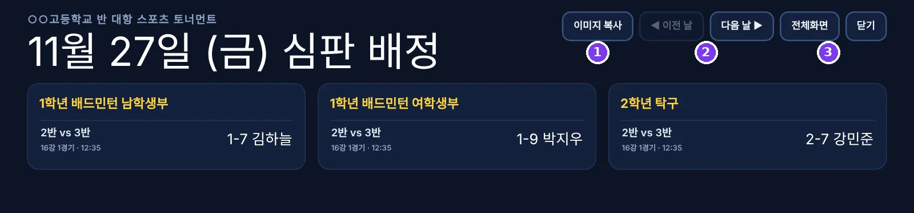
- 이미지 복사 — 지금 보고 있는 날의 배정표를 그림으로 복사해요. 학급 단톡방이나 메신저 대화창에 Ctrl+V로 붙이면 돼요. 휴대폰·태블릿에서는 이미지 저장으로 바뀌어 사진첩(다운로드)에 저장돼요.
- ◀ 이전 날 · 다음 날 ▶ — 날짜를 넘겨 봐요. 처음에는 오늘(없으면 다음 경기일)이 떠요.
- 전체화면 · 닫기 — 닫기는 Esc 키로도 돼요.
크게 보기를 열지 않고 심판 배정 칸의 배정표 이미지 복사를 바로 눌러도 돼요. 이때는 오늘(없으면 다음 경기일) 배정표가 복사돼요. 복사가 막힌 화면에서는 그림 파일로 내려받고 미리보기를 띄워 줘요.
4-5경기 결과 입력하기
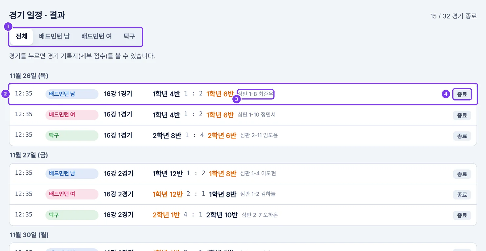
- 종목 거르기 — 전체 또는 종목(부)별로 모아 봐요.
- 경기 줄 — 누르면 경기 기록지가 열려요. 이긴 반은 주황색으로 표시돼요.
- 심판 — 배정된 학생 심판(수업 모드에서는 숨김).
- 진행 상태 — 예정 · 입력 중(일부 세트만 입력) · 종료.
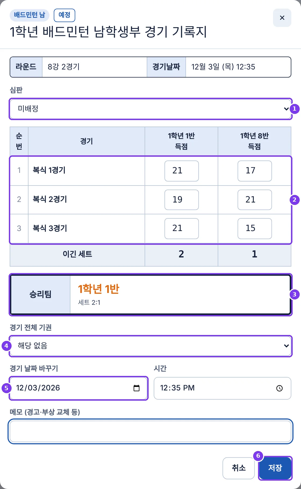
- 심판 — 이 경기의 심판을 직접 고르거나 바꿔요.
- 세트별 점수 — 듀스·세트 점수 설정에 맞지 않는 점수(예: 듀스 없음인데 23:21)를 넣으면 줄 아래에 안내가 떠요.
- 승리팀 — 이긴 세트 수(또는 득점 합)로 자동 판정돼요. 3세트 경기라면 2세트를 먼저 이기는 순간 정해져요.
- 경기 전체 기권 — 한 반이 오지 않았을 때. 점수 없이 상대 반이 이겨요.
- 경기 날짜 바꾸기 · 시간 — 이 경기만 다른 날로 옮겨요. 일정에 ‘변경’ 표시가 붙어요.
- 저장 — 저장하면 이긴 반이 다음 라운드로 올라가요. 메모 칸에는 경고·부상 교체 같은 특이 사항을 적어 둬요.
- 중간 저장도 돼요. 1세트만 넣고 저장하면 ‘입력 중’으로 표시되고, 나중에 이어서 넣을 수 있어요.
- 총득점 합산에서 점수가 같으면 ‘동점 — 운영진 판정’ 칸이 나타나요. 승부차기·자유투 결과에 따라 이긴 반을 골라 주세요.
- 잘못 넣은 기록은 기록지의 기록 지우기로 지워요. 앞 경기의 승리팀이 바뀌면 다음 라운드의 상대도 바뀌니, 이어진 경기 기록도 함께 확인하세요.
- 대진표의 경기 칸이나 ‘오늘’ 화면의 경기 카드를 눌러도 같은 기록지가 열려요.
4-6대진표와 순위 공유하기
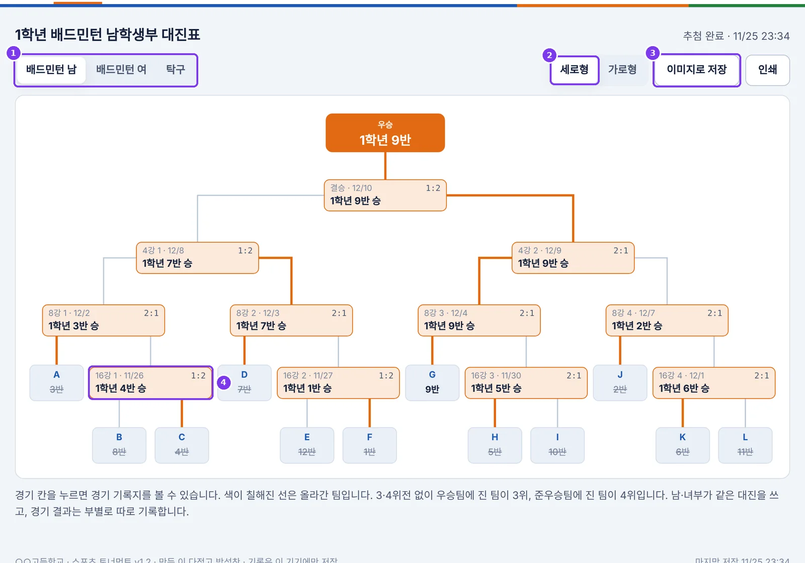
- 종목(부) 고르기 — 배드민턴 남 · 배드민턴 여 · 탁구.
- 세로형 / 가로형 — 세로형은 TV·게시용, 가로형은 팀 이름이 길 때 좋아요.
- 이미지로 저장 — 지금 보이는 대진표를 PNG 그림으로 내려받아요. 단톡방·학교 홈페이지에 올리기 좋아요. 옆의 인쇄를 누르면 메뉴 없이 대진표만 인쇄돼요. 인쇄 창에서 ‘가로’ 방향을 고르면 크게 나와요.
- 경기 칸 — 누르면 그 경기 기록지가 열려요. 색칠된 선은 올라간 팀이에요.
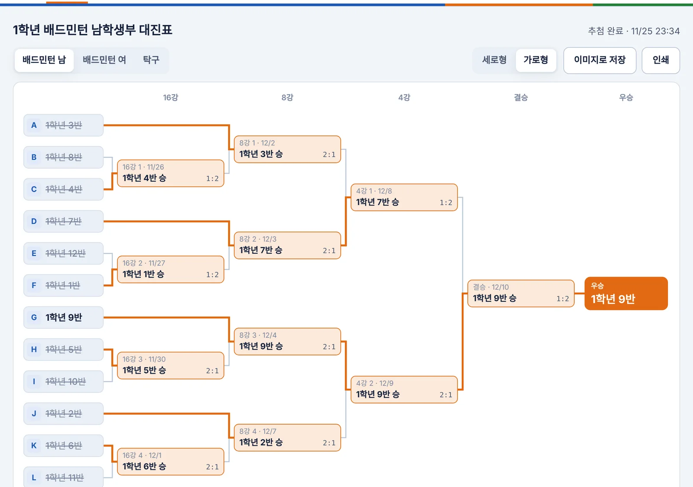
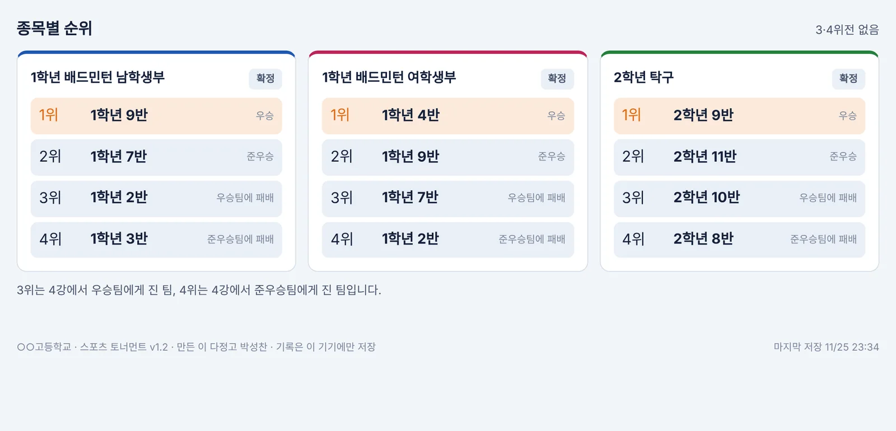
4-7학생에게 보여 주기 (수업 모드)
교실 TV나 체육관 프로젝터에 띄워 둘 때는 수업 모드를 켜세요. 학생이 마우스를 만져도 기록이 바뀌지 않아요.
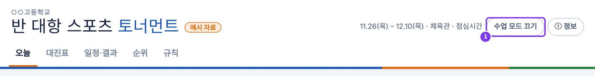
- 수업 모드 끄기 — 비밀번호를 넣어야 꺼져요. 관리 탭이 사라지고, 기록지는 보기만 돼요.
- 처음 수업 모드를 누르면 비밀번호(4자 이상)를 두 번 입력해 정해요.
- 수업 모드에서는 관리 탭, 점수 입력, 심판 이름이 숨겨져요. 대진표·일정·순위·규칙은 그대로 보여요.
- 끌 때, 그리고 새 대회 시작 · 기록 모두 지우기를 할 때 같은 비밀번호를 물어봐요.
- 비밀번호는 관리 → 데이터 관리 → 수업 모드 비밀번호 정하기에서 바꿀 수 있어요.
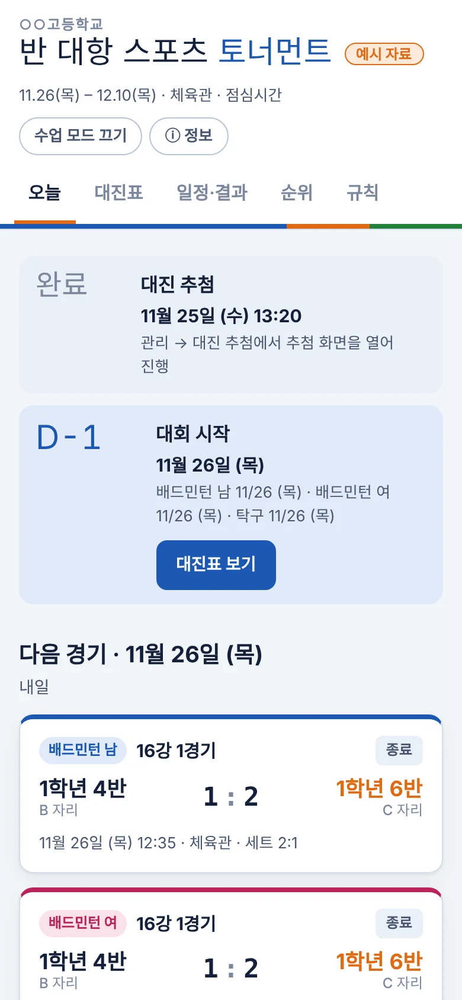
학생 휴대폰으로 같은 주소를 열어도 선생님 기록은 보이지 않아요. 기록은 선생님이 입력한 그 기기에만 있기 때문이에요. 학생과 결과를 나누려면 교실 화면에 띄우거나, 대진표 이미지 저장·인쇄로 공유하세요.
4-8백업하고, 옮기고, 마무리하기
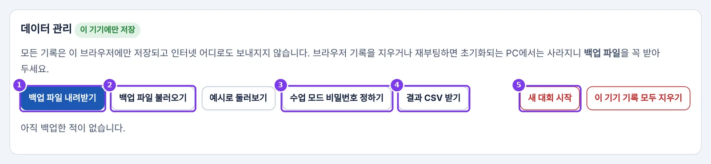
- 백업 파일 내려받기 — 대회 전체(설정·추첨·기록·심판)를 파일 하나(.json)로 받아요. 마지막 백업 시각이 아래에 표시돼요.
- 백업 파일 불러오기 — 다른 기기에서 받은 백업 파일을 열면 그대로 이어서 쓸 수 있어요. 지금 기기의 기록은 백업 내용으로 바뀌어요.
- 수업 모드 비밀번호 정하기 — 비밀번호를 새로 정하거나 바꿔요.
- 결과 CSV 받기 — 모든 경기 결과를 엑셀에서 열 수 있는 표로 받아요. 결과 보고, 생활기록부 자료 정리에 써요.
- 새 대회 시작 — 지금 대회를 지우고 빈 대회를 만들어요. 그 전에 꼭 백업하세요. 옆의 이 기기 기록 모두 지우기는 앱의 모든 기록을 지워요.
백업 습관 — 추첨 저장 직후, 그리고 경기가 있는 날 결과를 다 넣은 뒤에 한 번씩. 백업 파일은 학교 업무 PC나 클라우드에 모아 두세요.
05꼭 알아 둘 점
자주 받는 질문과, 기록이 사라지지 않게 하는 방법이에요.
기록은 어디에 저장되나요?
지금 쓰는 기기의 브라우저 안에만 저장돼요. 학생 이름, 점수, 심판 명단이 인터넷 어디로도 보내지지 않아요. 같은 기기, 같은 브라우저로 다시 열면 그대로 이어져요.
교무실 PC에서 입력하고, 체육관 노트북에서 띄우고 싶어요.
교무실 PC에서 백업 파일 내려받기 → 파일을 USB나 메일로 옮기기 → 노트북에서 백업 파일 불러오기. 두 기기에서 동시에 입력하면 서로 합쳐지지 않으니, 입력하는 기기는 하나로 정해 두세요.
기록이 사라질 수 있는 경우가 있나요?
- 재부팅하면 초기화되는 교실 PC(복원 프로그램이 깔린 PC)
- 브라우저의 ‘인터넷 사용 기록 삭제’에서 쿠키·사이트 데이터를 지웠을 때
- 시크릿 창(InPrivate)에서 썼을 때
이런 환경이라면 그날 일이 끝날 때마다 백업 파일을 받아 두세요.
추첨을 다시 하고 싶어요.
경기 기록이 없다면 관리 → 대진 추첨 → 추첨 화면 열기에서 다시 추첨하고 저장하면 돼요. 기록이 하나라도 있으면 다시 추첨할 수 없으니, 그 종목의 기록을 먼저 지워 주세요.
팀 이름에 오타가 있어요. 추첨 뒤에도 고칠 수 있나요?
네. 종목 설정의 참가 팀 목록에서 이름만 고치면 대진과 기록은 그대로 유지돼요. 줄을 더하거나 빼서 팀 수를 바꾸면 추첨이 지워지니 주의하세요.
3·4위전을 하고 싶어요.
지금 버전은 3·4위전 없이, 4강에서 우승팀에 진 팀을 3위, 준우승팀에 진 팀을 4위로 정해요. 3·4위전이 꼭 필요하다면 아래 내 수업에 맞게 고쳐 쓰기의 요청 예시를 참고하세요.
리그전(풀리그)도 되나요?
이 앱은 토너먼트 전용이에요. 조별 리그는 체육 앱 서랍의 탁구·배드민턴 리그전 앱을 쓰세요.
오류를 찾았거나 필요한 기능이 있어요.
schoolparksc@sjeai.kr로 보내 주세요. 화면 사진을 함께 보내면 빨리 고칠 수 있어요. 학생 이름 같은 개인정보는 가리고 보내 주세요.
06내 수업에 맞게 고쳐 쓰기
이 앱은 HTML 파일 하나로 되어 있어서, AI에게 파일을 주고 말로 부탁하면 우리 학교에 맞게 고칠 수 있어요. 코딩을 몰라도 괜찮아요.
이렇게 부탁해 보세요
고쳐 쓸 때 지킬 것
- 한 번에 하나씩 부탁하세요. 여러 가지를 한꺼번에 바꾸면 어디서 문제가 생겼는지 찾기 어려워요.
- 원본 파일은 따로 보관하세요. 고친 파일 이름은 ‘스포츠-토너먼트-우리학교.html’처럼 바꿔 두면 헷갈리지 않아요.
- 쓰던 대회가 있다면 고치기 전에 백업 파일을 받아 두고, 고친 앱에서 불러와지는지 확인하세요.
- AI에게 파일을 줄 때 학생 이름이 담긴 백업 파일은 올리지 마세요. 앱 파일(HTML)에는 학생 정보가 들어 있지 않아요.
고친 파일은 내 컴퓨터에서 더블클릭으로 바로 쓸 수 있어요. 동료 선생님과 나누고 싶다면 파일을 그대로 보내 주면 돼요. 기록은 파일이 아니라 각자의 브라우저에 저장되니까요.